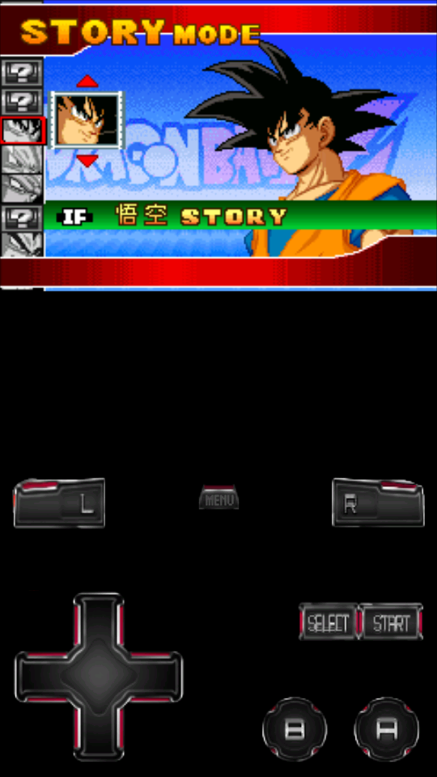

MyBoy 使用速查：9 个问题把这款 GBA 模拟器讲透
从定位、安装到云存档同步和同设备联机，一问一答快速摸清 MyBoy 的核心玩法和常见坑，GBA 老玩家和新入坑的都能快速上手。
整理一篇关于 MyBoy 的快问快答，把 GBA 模拟器最常被问到的点一次说清。
MyBoy 到底是什么？
MyBoy 是 Android 平台上一款专注 GBA 的模拟器，核心就是在手机上跑 Game Boy Advance 的游戏 ROM。它不碰 GB 和 GBC——要玩老 Game Boy 得找同一开发者的另一款 App，名字叫 My OldBoy!，别下错。MyBoy 的特点是轻量、启动快，虚拟按键布局合理，游戏内几乎所有设置都能随时调不用退出。如果你想把手机当成一台便携 GBA，这款是目前口碑最稳的选择，去它的官网看看就知道了。
哪些人需要装它？
三类人最直接：手上还有当年 GBA 卡带想补玩的、想在手机上刷宝可梦刷完一本道的、以及需要随时在通勤路上来一局的碎片时间玩家。如果你从来没接触过模拟器，单纯想体验老游戏——也没问题，MyBoy 的上手门槛极低，从安装到跑出游戏不超过五分钟。
免费版和完整版差在哪？
两个版本 Google Play 都能搜到。免费版带广告、加速上限锁在 2x，其他核心功能基本齐全；完整版是付费买断，无广告、加速倍率放开、多了 Google Drive 云存档同步、同设备联机的进程管理也更稳。如果只是偶尔玩几局免费版够用，但真打算长期用、有换机或多设备需求的，完整版的云同步体验会让你不想回去。
怎么装？装完要注意什么？
安装包从官方下载拿，Google Play 优先，第三方 APK 分发站也行但一定要选可信渠道。装完第一次打开系统会请求存储权限——这个必须给，MyBoy 需要读取你放在本地的 .gba 文件和写入存档。Android 11 及以上版本如果手滑点了拒绝，MyBoy 内部会自己弹一个目录选择器让你手动授权 ROM 所在文件夹，不会让你卡死在这。还有，ROM 文件后缀必须是 .gba，有些社区发的是压缩包（.zip / .7z），得先解压出来再加载。
ROM 文件怎么加载？有什么坑？
打开 MyBoy 主界面就是文件浏览器，导航逻辑和系统文件管理器一样，一步步走到你存 .gba 的目录点开就行。建议建一个固定文件夹比如 ROMs/GBA/ 专门放，不用每次到处翻。加载后屏幕分成游戏画面和虚拟按键两半，中间那个 MENU 按钮是核心入口——随时保存状态、加载状态、切加速倍率、输金手指、调屏幕布局全在这，不用退出游戏。
常见坑有三个：一是文件后缀被改成大写 .GBA 导致识别问题，用文件管理器改成小写就好；二是 ROM 放在加密或受保护目录里，挪到 /sdcard/Download/ 再试；三是 Android 分区存储限制，刚才说过用内置目录选择器授权就能绕开。

云存档同步怎么开？换机怎么续？
完整版才有的功能，免费版没有。设置里找到 Google Drive 项，登录授权后勾上自动同步存档和自动同步状态就行。同步时机很明确：游戏退出时自动上传、打开游戏时自动拉取本地没有的最新档、也可以手动点同步按钮。换机或者多设备之间切着玩，全程不用手动拷文件——拿平板接着手机上的进度续打半小时，回到手机再开游戏自动拉回来，无缝衔接。MyBoy 文档里有更详细的同步冲突处理说明，比如两个设备同时改了同一个游戏的存档时 Drive 会保留两个版本让你手动选。
同设备双开联机是什么玩法？
就是一台手机同时开两个 MyBoy 实例，自己和自己联机。典型用法是宝可梦系列里让需要通信进化的怪（耿鬼、怪力这些）自己和自己交换进化——没第二台设备也能搞定。操作步骤：第一个实例加载游戏停在联机等待界面，MENU 里把联机方式设为同设备并勾上"作为服务器"，然后回桌面再打开一个 MyBoy 加载同一个游戏的另一个存档，第二个实例连接 localhost，两边进游戏联机菜单就通了。对手机性能要求不低，两个 GBA 实例同时跑意味着内存 CPU 压力翻倍，中低端机可能交替掉帧、切换应用时被系统杀掉，建议关后台、把分辨率调低，或者只在需要交换数据时用一下别长时间挂着。完整版的双开进程管理做了优化，比免费版稳不少。
和其他 GBA 模拟器比怎样？
市面上同类产品不少，MyBoy 的定位就是专注 GBA、轻量稳定。那些功能更全、跨多平台的模拟器（比如 RetroArch 系）适合喜欢折腾和追求全能的玩家，但它们的体积和配置复杂度对只想安静玩游戏的人来说是负担。MyBoy 打开就是文件浏览器，加载就是点一下，游戏内设置也都是直觉式的——不想花时间研究模拟器本身的话，MyBoy 是性价比最高的选择。
值不值得长期装着？
值得。不管是免费版还是完整版，装一次能用好几年，老 GBA 游戏的体验还原度够、设置够灵活，云同步和同设备联机解决了真机时代最头疼的两个痛点——手动拷存档和没第二台设备联机。真要长期玩 GBA，完整版那点买断价格换一个不用再操心的存档和设备体验，是花得最值的一笔钱。
想持续追 MyBoy 的更新和配置资料，可以去三个仓库都拿到对应的文档内容和资源备份：GitHub、Gitee、GitCode，国内访问优先 Gitee 或 GitCode 会更顺畅。